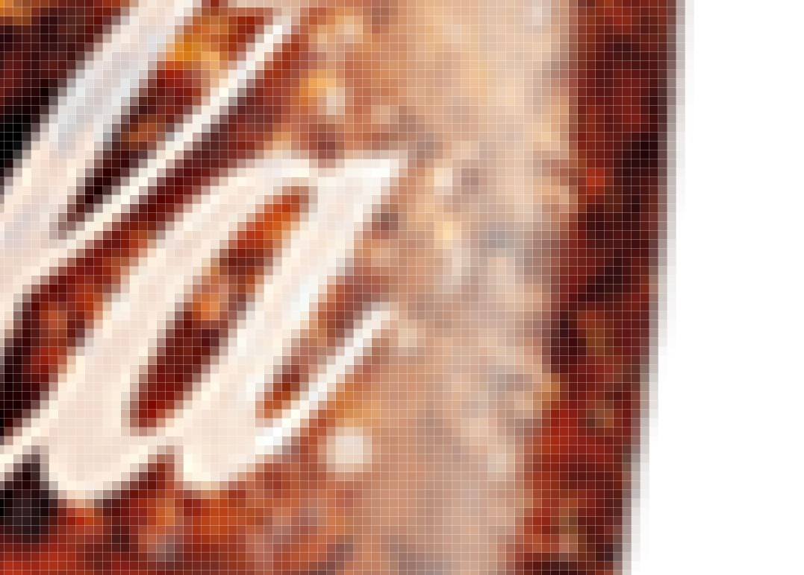

Computer Aided Design
Raster
Raster graphics are bitmaps. A bitmap is a grid of individual pixels that collectively compose an image. Raster graphics render images as a collection of countless tiny squares. Each square, or pixel, is coded in a specific hue or shade. Individually, these pixels are worthless. Together, they’re worth a thousand words.

Vector
Unlike pixel-based raster images, vector graphics are based on mathematical formulas that define geometric primitives such as polygons, lines, curves, circles and rectangles. Because vector graphics are composed of true geometric primitives, they are best used to represent more structured images, like line art graphics with flat, uniform colors. Most created images (as opposed to natural images) meet these specifications, including logos, letterhead, and fonts.

Raster VS Vector

Softwares that uses raster graphics are Adobe Photoshop, Gimp and others. While softwares that uses vector graphics are Illustrator, CorelDRAW, Inkscape and many more.
Egg cup
I sketched out the circle at first using Center Diameter Circle (s). Under construct, offset plane allows me to draw another circle above.

After that, using loft under solid to create the shape of egg cup

Using shell under tools > modify, to create a hole


Editing
I learned that under the timeline, I can right-click and edit shape. If the end look doesn't look right, this will allow me to edit the shape that I want

Knight Chess Piece
By bringing in an image, I can trace out the bottom part of the knight chess piece
Using revolve, I have created the base of the chess

Because the head of the knight chess is flat, it doesn't work to trace the whole shape and revolve everything. This is why there is a separated tracing of the base and head.
After tracing the head, I use extrude with symmetric direction